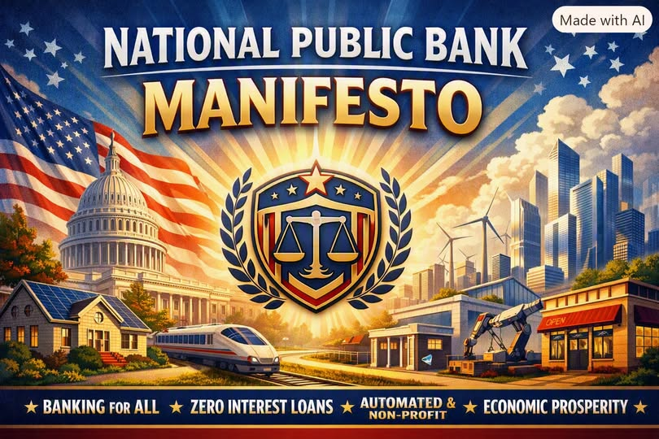

Terra Nova Development · Article #106
The Manifesto of the National Public Bank
A Declaration for a New Financial Order

Download this article as a Word documentI. The Premise
We stand at the threshold of a transformation long overdue.
For generations, the financial system has been shaped not by public need, but by private profit.
Banks have become gatekeepers of opportunity, rationing credit, extracting interest, and advertising illusions of prosperity while millions remain locked out.
The purpose of a financial system is not to enrich institutions.
Its purpose is to empower people.
This manifesto declares a new model:
A National Public Bank — federally subsidized, automated, universal, and non-profit — designed to replace commercial banking and restore finance to its rightful role as a public utility.
II. The Mission
The National Public Bank exists to serve every citizen, every community, and every enterprise without discrimination, without predatory terms, and without the distortions of profit.
Its mission is simple:
- Universal access
- Zero or near-zero interest credit
- Automated fairness
- National development
- Economic stability
- Public benefit over private gain
It is not a competitor in the marketplace.
It is the foundation of a new marketplace.
III. The Principles
1. Finance as a Public Utility
Just as water, electricity, and roads serve all people, so must credit.
Housing, transportation, education, and entrepreneurship are not luxuries — they are the engines of national strength.
The National Public Bank treats them as such.
2. Automation Over Manipulation
The bank operates through transparent algorithms, not sales tactics.
No advertising.
No upselling.
No hidden fees.
No psychological traps.
Automation ensures consistency.
Oversight ensures fairness.
3. Zero-Profit Operation
The bank does not seek profit.
It does not chase quarterly earnings.
It does not reward shareholders.
Its only return is national prosperity.
4. Subsidized Credit for the Public Good
Interest exists today because private banks must profit.
Remove the profit motive, and interest becomes unnecessary.
Through federal subsidy and central reserve liquidity, loans for:
- housing
- vehicles
- education
- small business
- infrastructure
- innovation
can be issued at 0% or near-zero interest, with repayment directed entirely toward principal.
5. Universal Accounts
Every citizen receives a National Public Bank account at birth or naturalization.
Every business receives one at registration.
No application.
No minimum balance.
No exclusion.
6. Stability Through Centralization
Fragmented banking creates instability.
A unified system creates resilience.
The National Public Bank eliminates:
- bank runs
- speculative lending
- predatory credit
- systemic collapse
- regional inequality
It becomes the anchor of national financial stability.
IV. The Structure
A. The Central Reserve
The Central Reserve provides liquidity at 0% interest.
It manages inflation, stabilizes currency, and ensures that credit flows where it is needed most.
B. The Automated Core
Algorithms evaluate:
- income
- repayment ability
- risk category
- national priorities
Loan decisions are fast, consistent, and transparent.
C. The Public Branch Network
Existing commercial bank branches convert into public service centers — like post offices.
Human staff provide support, but automation handles the majority of operations.
D. The Unified Payment System
All payments — deposits, transfers, payroll, bills — run through a national digital system.
Instant.
Secure.
Fee-free.
V. The Benefits
1. Housing Becomes Attainable
0% mortgages.
No compounding interest.
No predatory terms.
Homeownership becomes a right, not a gamble.
2. Transportation Becomes Affordable
0% auto loans.
No dealer financing traps.
No inflated interest.
3. Consumer Credit Becomes Humane
Lines of credit for essentials.
No revolving interest.
No late-fee traps.
No payday loans.
4. Business Formation Explodes
Near-zero interest startup loans.
Government-backed risk pools.
Small businesses flourish.
Innovation accelerates.
5. National Development Accelerates
Credit flows toward:
- infrastructure
- energy
- technology
- agriculture
- manufacturing
- education
The nation grows by design, not by accident.
6. Economic Stability Increases
No bank failures.
No credit crunches.
No speculative bubbles driven by private lending.
VI. The Challenges
This transformation requires:
- political will
- structural redesign
- public consensus
- transition planning
- regulatory modernization
Commercial banks will resist.
Financial institutions will oppose.
But progress has always required courage.
VII. The Vision
Imagine a nation where:
- every citizen has access to fair credit
- every business can grow
- every family can own a home
- every community can thrive
- every dollar serves the public good
- every financial decision strengthens the nation
This is not utopian.
It is simply the next step in the evolution of public finance.
VIII. The Declaration
We declare that:
Finance must serve people.
Credit must be universal.
Banking must be automated, fair, and transparent.
Interest must be minimized or eliminated.
Profit must not dictate opportunity.
The nation must own its financial destiny.
The National Public Bank is not an institution.
It is a commitment —
to equity, stability, and shared prosperity.
IX. The Call
Let this manifesto be the foundation of a new financial order.
Let it guide policymakers, economists, technologists, and citizens.
Let it inspire a future where opportunity is not purchased — it is guaranteed.
The era of private banking dominance is ending.
The era of public finance is beginning.
This is the National Public Bank.
This is the future of economic democracy.